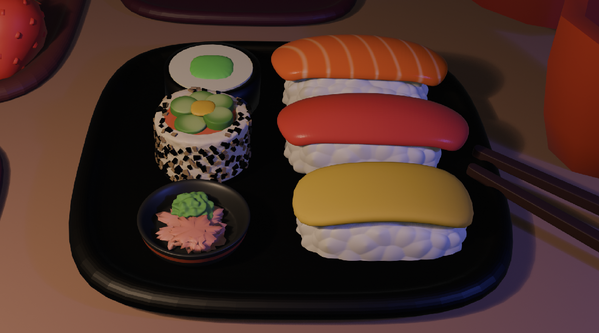
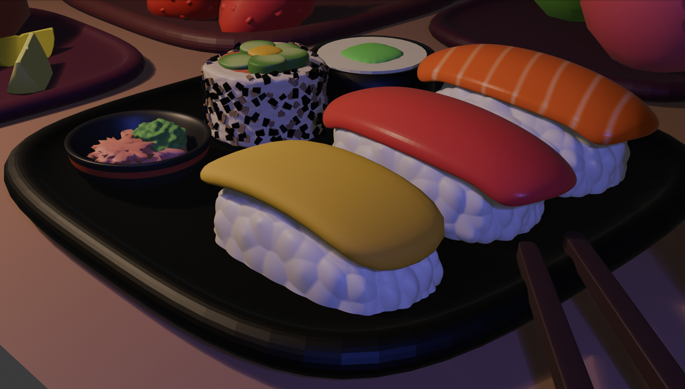

hello welcome to my blender projects!
Blender has been something I've been diving deeper into recently. I found it to be difficult as first but after watching some tutorials and practicing, I was able to create a plate of jello and a strawberry milkshake! I am impressed with the outcome of the jello and I think the graininess adds character to the piece. The whipped cream onto was personally my favorite part to model. My least favorite part though, was the milkshake cup because the proportions looked a little funny to me. I also played around with the lighting to give the piece more appeal and to tie in the pinks together! The vibrant lighting gave some life and a fun touch to the overall piece in my opinion.
 This was my first Blender project I ever worked on. I was excited to work on 3D models and incorperating this skill set into my works. I did struggle at first was the 3D plane of Blender. For example, my objects would seem to line up from my point of view. However, if I did a 360 spin around the object, it was nowhere close to interacting with each other haha. But with time and practice, I was able to model some sushi rolls and nigiri pieces! I was also able to make some ginger and wasabi as condiments for the sushi.
Some obstacles I faced when creating the models was trying to texture the rice for the nigiris. I wanted to make the grains of rice to look realistic but not so much to the point where you can count every grain. But at the same time, I wanted the rice to have some sort of character to it so it doesn't look like a white brick. After tweaking the textures a bit, I ended up with the final results in the photo which I think turned out pretty well!